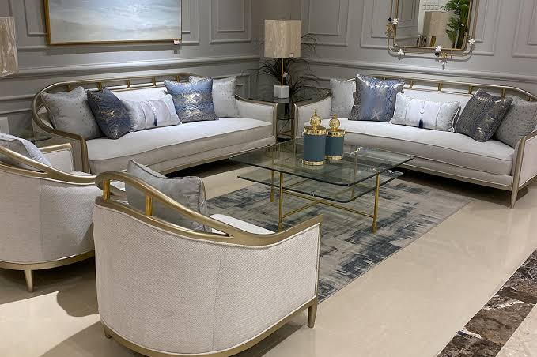
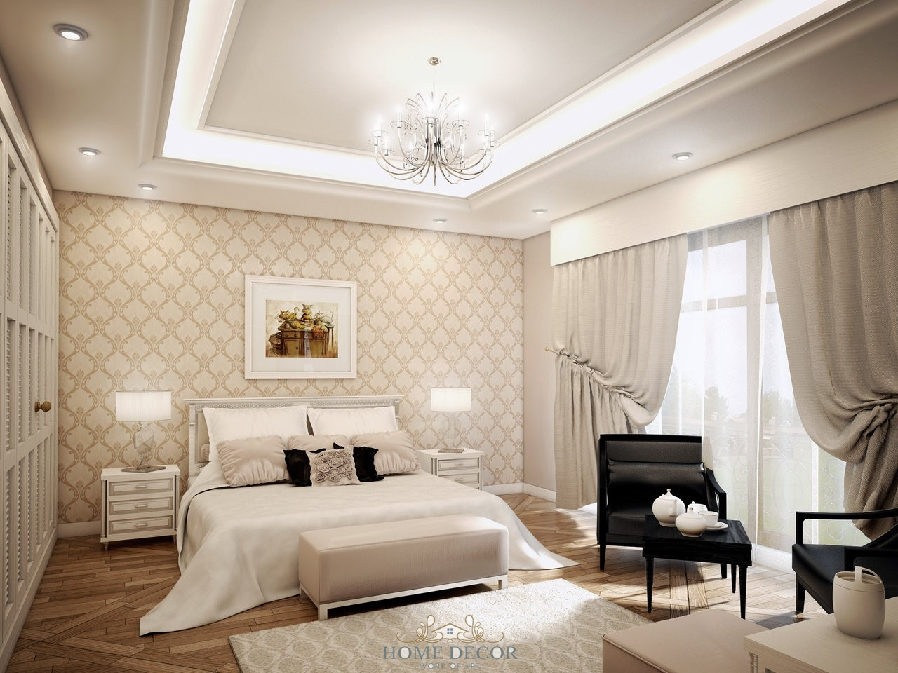

شركة شراء الاثاث المستعمل بمكة تقدم خدماتها الفريدة للمواطنين في مكة المكرمة وعدة مدن أخرى في المملكة العربية السعودية. إذا كنت تبحث عن مكان لشراء اثاثك المستعمل في مكة، فلا حاجة للبحث بعيدًا، حيث توفر هذه الشركة العديد من المزايا الاستثنائية. ستجد هنا أفضل الأسعار الممكنة وخدمة متميزة لفك الاثاث عندما تقرر شراءه.
شراء الاثاث المستعمل بمكة :
عملية شراء الاثاث المستعمل بمكة هي من الأمور المثيرة للاهتمام في مدينة مكة المكرمة. في الفترة الأخيرة، ظهرت شركات متخصصة في شراء الاثاث المستعمل في مكة والأصول القديمة من المواطنين الذين يرغبون في التخلص منها. إذا كنت مقيمًا في مكة المكرمة أو تمتلك قطعًا من الاثاث التي تود شراءها، سواء كانت قطعة واحدة أو أكثر، يمكنك بسهولة التواصل مع خدمة العملاء المتاحة لدى شركات شراء الاثاث المستعمل في مكة. شراء اثاث مستعمل بمكة
سيتم تسجيل معلوماتك على الفور، وسيتم إرسال خبراء لمساعدتك في العملية دون الحاجة لمغادرة منزلك. سيقوم هؤلاء الخبراء بتقدير قيمة العناصر المعروضة بأسعار عادلة، إذ يتمتعون بمهارات تقييم عالية تمكنهم من تحديد القيمة بدقة سواء كانت القطع قديمة أم جديدة في أسرع وقت ممكن وبأعلى قيمة ممكنة.
شركة شراء الاثاث المستعمل في مكة تسعى أيضًا لتلبية احتياجات العملاء بأفضل الطرق وتوفير خدمة خالية من الإجهاد المالي الإضافي. وبالإضافة إلى ذلك، تستطيع الشركة شراء الاثاث من أي مكان داخل المملكة، وليس مقتصرًا على مكة فقط، مما يجعلها واحدة من أبرز الشركات التي تقدم هذه الخدمة في سوق الاثاث المستعمل.
شراء اثاث مستعمل بمكة :
شركة شراء الاثاث المستعمل بمكة تقدم لك أفضل الفرص عندما يتعلق الأمر بشراء اثاثك المستعمل في مكة، وإذا كنت تفكر في شراء الاثاث المستعمل في مكة، فإنها تقدم هذا الاختيار أيضًا. ولا تقتصر خدماتها على ذلك فقط، بل تشمل أيضًا خدمات فك ونقل الاثاث بشكل مجاني.
شركة شراء الاثاث المستعمل في مكة تتميز بالعديد من المزايا الرائعة، وسنقدم بعضًا منها لكم: شراء اثاث مستعمل بمكة
- شراء جميع أنواع الاثاث: تقوم الشركة بشراء جميع أنواع الاثاث، بدءًا من غرف النوم وصولاً إلى غرف الأطفال، وتشمل أيضًا اثاث أماكن العمل مثل مكاتب المكاتب وغرف الشركات وأكثر من ذلك.
- تقييم دقيق: تهتم الشركة بتقديم تقييم دقيق لجميع قطع الاثاث المعروضة للشراء، مما يضمن الحصول على أفضل الأسعار. وتشجع أيضًا على تنظيف الاثاث قبل عرضه للشراء للحصول على قيمة أفضل. إذا كنت بحاجة إلى خدمات التنظيف، فإن الشركة تقدم هذه الخدمة أيضًا.
إذا كنت تخطط لشراء أو شراء اثاث في مكة، فإن التواصل مع الشركة سيكون خيارًا مثاليًا للتفاوض والاستفادة من خدماتها السريعة والموثوقة.
شركة شراء اثاث مستعمل في مكة :
شركة شراء اثاث مستعمل في مكة تُقدم قطع اثاث مستعملة بحالة ممتازة ونظيفة تمامًا، وتخلو من أي كسور أو عيوب. إضافةً إلى ذلك، تتميز هذه الاثاث بمستوى عالٍ من النظافة وتبدو تقريبًا كالاثاث الجديد. لذا، عندما تفكر في شراء قطع اثاث مستعملة لأي غرض كان، لا داعي للقلق.
الشركة تعرض اثاث منزليًا نظيفًا للغاية وذو جودة عالية، مما يجعلها خيارًا ممتازًا للأشخاص الباحثين عن قطع اثاث مستعملة بجودة ممتازة. لذا، يُفضل الاتصال بالشركة الآن لترتيب معاينة واختيار الاثاث الذي يتناسب مع احتياجاتك. شراء اثاث مستعمل بالرياض
شراء جميع الأجهزة الكهربائية بمكة :
شركتنا تختص في مجال شراء وشراء جميع أنواع الأجهزة الكهربائية بمكة ، مثل الثلاجات، والشاشات، والمكيفات، والعديد من الأجهزة الأخرى. إذا كنت تنوي شراء أو شراء أجهزة كهربائية مستعملة، فإننا نقدم لك خيارات رائعة.
ستجد لدينا أسعارًا ممتازة سواء كنت تقوم بشراء الأجهزة الكهربائية المستعملة أو شراؤها. بالإضافة إلى ذلك، نقدم خدمات نقل، وفك، وتركيب الأجهزة، مما يجعل عملية الشراء والشراء سهلة ومريحة للعملاء.
مع هذه الخدمات المميزة، ستجد نفسك مرتاحًا وراضيًا تمامًا، سواء كنت تنوي شراء أو شراء الأجهزة الكهربائية المستعملة بمكة
شراء الاثاث المستعمل بسعر ممتاز في مكه :
إحدى أهم ميزات شركة شراء الاثاث المستعمل بمكة هي تقديمها لأسعار ممتازة عند شراء الاثاث المستعمل في مكة . لذا، يمكنك أن تشعر بالاطمئنان وعدم القلق من الاستفادة المبالغ فيها في محلات شراء الاثاث المستعمل في مكة. نحن نشجعك على التواصل مع الشركة الآن لتحقيق أفضل صفقة.
بفضل هذه الشركة، يمكنك شراء الاثاث والأجهزة الكهربائية والمكاتب والمكيفات وغيرها بأفضل الأسعار المتاحة في السوق. فلا تتردد في البحث عن العناصر التي تحتاجها والتواصل مع الشركة للاستفادة من عروضها وخدماتها المميزة.
شركة شراء الاثاث المستعمل بمكة بسعر رائع :
إحدى المزايا البارزة شركة شراء الاثاث المستعمل بمكة هي أنها لا تقتصر على عملية شراء الاثاث فحسب، بل تقدم أيضًا خدمات شراء الاثاث المستعمل. يُعتبر هذا الاختيار خيارًا ممتازًا للمواطنين الذين في بعض الأحيان يحتاجون إلى شراء اثاث مستعمل ذو جودة عالية.
تقدم الشركة خدمات شراء الاثاث المستعمل في مكة بأسعار معقولة للجميع، مع الحفاظ على جودة عالية للاثاث. وهذا يعني أن العملاء يمكنهم الاعتماد على الشركة لتلبية احتياجاتهم من الاثاث المستعمل بجودة ممتازة وأسعار معقولة.
بفضل هذه الخدمة الشاملة، تجعل الشركة عملية شراء وشراء الاثاث المستعمل في مكة أمرًا مريحًا وسهلًا للعملاء، سواء كانوا يرغبون في شراء الاثاث الزائد لديهم أو شراء قطع جديدة لتحسين منزلهم.

ما هي مميزات شركة شراء اثاث مستعمل بمكة ؟
تتميز شركة شراء الاثاث المستعمل بمكة بالعديد من المزايا التي تجعلها تبرز عن منافسيها في سوق شراء الاثاث المستعمل في مكة. ومن بين هذه المزايا:
- سرعة الاستجابة والتفاعل: تُظهر الشركة استجابة سريعة لطلبات العملاء واستفساراتهم، مما يوفر لهم الوقت والراحة.
- أسعار معقولة: تقدم الشركة أسعارًا مناسبة تتناسب مع ميزانية معظم العملاء.
- خدمة عملاء على مدار الساعة: توفر الشركة أرقام اتصال متاحة على مدار الساعة لتلبية احتياجات العملاء في أي وقت.
- موقع الشركة على الإنترنت: يتيح الموقع للعملاء التواصل واستعراض جميع الخدمات التي تقدمها بسهولة.
- عرض صور للاثاث المستعمل: يُمكن للعملاء رؤية صور للاثاث المستعمل المتاح للشراء عبر الموقع.
- إمكانية المعاينة المجانية: تُتاح للعملاء فرصة معاينة الاثاث قبل شرائه دون دفع أي رسوم إضافية.
- خدمات النقل مجانية: تقدم الشركة خدمات النقل دون تكلفة إضافية للعملاء.
- تنوع الاثاث: تتوفر لديها تشكيلة متنوعة من الاثاث المستعمل، بما في ذلك الاثاث الحديث والكلاسيكي والمودرن، لتناسب جميع الأذواق والاحتياجات.
معارض شركة شراء اثاث مستعمل بمكة :
في معارض شركة شراء اثاث مستعمل بمكة، تمتاز العروض بالفعل بتفوق لا يُضاهى. يتميز الاثاث المستعمل الذي تقدمه الشركة بالاستدامة والمتانة، حيث يأتي بحالة نظافة مثالية دون أي آثار للبقع أو الكسور أو الخدوش.
ما يميز هذه الشركة بشكل خاص هو توفيرها للعملاء ليس فقط الاثاث المستعمل بل أيضًا الأجهزة الكهربائية والأجهزة المنزلية المستعملة. بالإضافة إلى ذلك، تقدم الشركة خدمة شراء مكيفات مستعملة عالية الجودة بمكة ، مما يتيح للعملاء الاستمتاع ببيئة منعشة ومريحة في منازلهم.
يمكنك الاعتماد على الشركة للصيانة والتصليح في أي وقت تحتاجه. ويُشير إلى أن الشركة تقوم بعرض الاثاث المستعمل بشكل لائق وتخزينه في مكان نظيف ومنظم لضمان الحفاظ على حالته الجيدة.
اليكم المزيد من الخدمات
أهم الأحياء التي تحصل على خدمات شركة شراء اثاث بمكة
شركاتنا دائمًا تسعى لتقديم خدماتها في جميع المناطق والأماكن داخل مدينة مكة، بهدف تيسير التواصل مع عملائها الكرام. تتميز شركتنا بسمعة طيبة في سوق شراء الاثاث القديم، وتمتد أنشطتها في مختلف الأنحاء والمدن داخل المملكة العربية السعودية. وتقدم مجموعة متنوعة من الخدمات لزبائنها في مدينة مكة وفي جميع أنحاء المنطقة.
إذا كنت تود معرفة المناطق التي تقدم فيها الشركة خدماتها، يمكن أن تشمل ما يلي:

شراء اثاث مستعمل بمكة حي الشرائع :
شركة شراء الاثاث المستعمل بمكة حي الشرائع تسعى دائمًا لتلبية احتياجات العملاء والمواطنين في جميع المناطق. واحدة من الخدمات البارزة التي تقدمها هي توفير محلات مخصصة لشراء الاثاث المستعمل، حيث يمكن للزبائن شراء القطع المفضلة لديهم أو عرض الاثاث الذي يرغبون في شراءه للشركة. تتولى الشركة مهمة إعادة تجديد وصيانة هذه القطع وتقديمها مجددًا بأسعار معقولة، مما يسمح للعملاء بالاستفادة من تشكيلة متنوعة من الاثاث بأسعار تناسب مختلف الأسواق والفئات الاجتماعية.
تُقدم الشركة هذه الخدمة في جميع أحياء مدينة مكة، بما في ذلك حي الشرائع، حيث يمكن للعملاء التعاقد مع الشركة والاتفاق على الخدمة المطلوبة. بعد ذلك، تتم عملية نقل القطع المشتراة من العميل إلى ورش العمل الخاصة بالشركة لتجديدها وعرضها مرة أخرى بأسعار تنافسية. تلك الخدمة توفر الوقت والجهد للعملاء وتلبي احتياجات أذواق متنوعة.
شراء اثاث مستعمل بمكة حي العزيزية
شركة شراء الاثاث المستعمل بمكة حي العزيزية تسعى دائمًا لتلبية احتياجات العملاء والمواطنين في جميع أنحاء المدينة. واحدة من أبرز الخدمات التي تقدمها هي توفير محلات مخصصة لشراء الاثاث المستعمل، مما يتيح للعملاء شراء القطع التي تناسب ذوقهم أو عرض الاثاث الذي يرغبون في شراءه للشركة. تقوم الشركة بجهد كبير في إعادة تجديد وصيانة هذه القطع وعرضها من جديد بأسعار معقولة، مما يتيح للعملاء الاستفادة من تشكيلة متنوعة من الاثاث تتناسب مع مختلف الأذواق والفئات الاجتماعية.
تُقدم الشركة هذه الخدمة في جميع أحياء مدينة مكة، بما في ذلك حي الشرائع. حيث يمكن للعملاء التعاقد مع الشركة والاتفاق على الخدمة المطلوبة. بعد ذلك، يتم نقل القطع المشتراة من العميل إلى ورش العمل الخاصة بالشركة لإعادة تأهيلها وعرضها من جديد بأسعار تنافسية. تلك الخدمة توفر الوقت والجهد للعملاء وتلبي احتياجات أذواق متنوعة.
شراء اثاث مستعمل بمكة حي الزيدي
حي الزيدي يعتبر واحدًا من أجمل الأحياء في مدينة مكة، ويشتهر بمواطنيه الذين يهتمون دائمًا بتجديد وتحسين اثاث منازلهم باستخدام قطع ذات جودة عالية. هؤلاء المواطنين يبحثون دائمًا عن أفضل الشركات التي تقدم خدمات شراء اثاث مستعمل بمكة حي الزيدي ، وفي هذا السياق تأتي دور شركتنا، شركة شراء الاثاث المستعمل بمكة حي الزيدي ، حيث تُقدم خدمات متميزة بأسعار تنافسية.
إذا كنت تفكر في شراء قطع الاثاث الخاصة بك، يمكنك بسهولة التواصل مع شركتنا وسنقوم بشراء جميع القطع التي ترغب في شراءها، سواء كانت قطعًا مكتبية، غرف نوم، غرف معيشة، مطابخ، مكاتب أو غيرها من قطع الاثاث. وإذا كنت تبحث عن شراء اثاث مستعمل حي الزيدي ، سنساعدك أيضًا في العثور على القطع التي تحتاجها بأسعار مناسبة. وإذا كنت بحاجة إلى نصائح حول شراء الاثاث المستعمل، سنقدم لك أفضل النصائح والإرشادات للعثور على قطع الاثاث بأسعار معقولة وجودة عالية.
شراء اثاث مستعمل مكة حي بطحاء قريش :
شركتنا تتفرد بتقديم مجموعة استثنائية من الخدمات وقد تم تصنيفها كواحدة من أفضل شراء اثاث مستعمل بمكة حي بطحاء قريش ، وحققت هذه الشركة مكانة مرموقة في الساحة الدولية. وهذا النجاح يعزى إلى ميزات بارزة متاحة في خدماتها، مما جعلها رائدة في هذا المجال.
تتمثل هذه الميزات في توفر أفضل الخبراء والمتخصصين في مجموعة متنوعة من المجالات مثل النجارة والهندسة والسباكة والكهرباء وغيرها، حيث يقوم هؤلاء المحترفون بتقييم القطع المستعملة وصيانتها بأعلى مستوى من الجودة. وتمتلك الشركة أيضًا أفضل الأدوات والمعدات المتخصصة لفك وتركيب قطع الاثاث بكفاءة عالية. بالإضافة إلى ذلك، تقدم الشركة مواد التغليف وسيارات نقل كبيرة قادرة على نقل أي قطعة من الاثاث بأي حجم إلى أي مكان داخل مدينة مكة وخارجها.
وتعكس حرص الشركة على توفير خدماتها في أماكن متعددة، بما في ذلك حي بطحاء قريش، جهودها المستمرة لتلبية احتياجات واستفسارات جميع العملاء. إن الشركة تضع رضا العملاء في مقدم أولوياتها وتولي اهتمامًا كبيرًا بهم، وليس فقط العائد المادي هو ما تهتم به.
شراء اثاث مستعمل بمكة حي العوالي :
شركة شراء الاثاث المستعمل بمكة حي العوالي تتبع أساليب فريدة ومميزة في تقديم خدماتها للعملاء الكرام في مدينة مكة، بما في ذلك حي العوالي. تهدف الشركة دائمًا إلى تقديم أفضل تجربة للعملاء، ولهذا تستخدم أساليب تسهيل الاتصال والتفاعل.
عندما يتصل العميل بالشركة عبر الأرقام المخصصة أو البريد الإلكتروني أو منصات التواصل الاجتماعي، يتلقى استجابة سريعة ومحترفة من قبل فريق الشركة. تُسجل جميع الطلبات والاستفسارات ومعلومات العملاء لضمان تقديم الخدمة بشكل مستدام ومنسق.
تتميز الشركة بتوفير فريق متخصص في شراء وشراء الاثاث المستعمل، مما يخفف من الأعباء عن العميل ويوفر له الوقت والجهد. الشركة تهدف إلى تقديم خدمات بأسعار مناسبة تلبي احتياجات العملاء وتفضيلاتهم. وهي تسعى إلى تحقيق التميز والريادة في هذا المجال، ولذلك تعمل دائمًا على تقديم خدمات عالية الجودة تجعلها منافسة رائدة في سوق شراء الاثاث المستعمل بمكة حي العوالي .
شراء اثاث مستعمل بمكة حي الشوقية :
بناءً على الضغوط المالية التي يواجهها المواطنون والمقيمون في مدينة مكة، يعتبر استخدام الاثاث المستعمل حلاً مبتكرًا لتجديد منازلهم وتحسين ظروفهم المعيشية. شركتنا تقدم خدمة شراء الاثاث المستعمل في متاجرها المتخصصة بأسعار ميسرة.
بفضل هذا الخيار، يمكن للأفراد توفير أموالهم بشكل كبير من خلال الحصول على قطع الاثاث بأسعار معقولة بدلاً من شراء اثاث مستعمل بمكة حي الشوقية . ولزيادة القيمة المضافة، تقدم شركتنا خدمات إضافية مثل خدمات تنظيف الملابس ونقل الاثاث المستعمل مجانًا.
شركتنا تعتبر واحدة من الشركات الرائدة في شراء الاثاث القديم وإعادة تجديده وصيانته بعناية. تتم عمليات الترميم بعناية لجعل القطع تبدو جديدة تمامًا ومستعدة للاستخدام مرة أخرى. بعد ذلك، يتم عرض هذه القطع للشراء في متاجرنا. نقوم بشراء وتجديد جميع أنواع الاثاث، بما في ذلك غرف الأطفال والمطابخ وغرف المعيشة والأجهزة الكهربائية مثل التليفزيونات والغسالات والنجف والديكورات. هذا يتيح للعملاء في مختلف مناطق مكة، بما في ذلك حي الشوقية، فرصة الحصول على قطع اثاث قديمة بحالة ممتازة تضفي على منازلهم طابعًا جديدًا وراقيًا.
شراء اثاث مستعمل بمكة حي النوارية :
ذا كان العميل يفكر في تحديث اثاث منزله واقتناء قطع جديدة بدلاً من القديمة، يمكن اللجوء شراء اثاث مستعمل بمكة حي النوارية يمكنه بسهولة القيام بعملية الشراء من خلال التواصل مع شركتنا. نقدم لعملائنا وسائل تواصل متعددة عبر أرقام الهواتف المخصصة، مما يسمح لهم بالاتصال في أي وقت يناسبهم طوال أيام الأسبوع. سنحدد موعدًا مناسبًا لمعاينة قطع الاثاث التي يرغبون في شراءها، حيث سيتم تقديم تقييم لقيمتها. نحن نقدم أعلى سعر ممكن للعميل، ونلتزم به بدقة.
بعد الاتفاق على الأسعار، يقوم فريق العمل لدينا بفك قطع الاثاث وتغليفها باستخدام مواد التعبئة والتغليف المناسبة لضمان سلامتها خلال عملية النقل. يتم تحميل هذه القطع في سيارات الشركة المجهزة خصيصًا لنقل الاثاث، ومن ثم يتم نقلها إلى ورش العمل. هناك، يتم إجراء عمليات التجديد والإصلاح بواسطة فريق من الفنيين والنجارين المتخصصين والمدربين باستمرار لمتابعة أحدث التقنيات والصيحات في هذا المجال.
بمجرد اكتمال عمليات التجديد والإصلاح، يتم عرض القطع المجددة في معارضنا بأسعار تنافسية وجاذبة. هذه الخدمة تتيح للعملاء الباحثين عن تجديد لاثاث منازلهم فرصة رائعة للحصول على قطع اثاث عالية الجودة بأسعار معقولة.
نشتري الاثاث المستعمل بمكة :
بالطبع، نقدم خدمة شراء الاثاث المستعمل باغلي سعر في مكة . نحن نوفر خدمات تنظيف وصيانة الاثاث للحصول على أقصى قيمة عند الشراء. لذا، ندعوكم بشدة للتواصل مع شركتنا الآن لشراء الاثاث المستعمل بأسعار تضمن رضاكم تمامًا.
يرجى أيضًا ترتيب الاثاث بشكل مناسب قبل التواصل معنا وطلب عملية المعاينة لضمان الحصول على أفضل العروض.
ما أسباب شراء اثاث مستعمل بمكة؟
كما هناك أسباب لشراء الاثاث المستعمل في مكة، هناك أيضًا أسباب لشراء الاثاث المستعمل في المدينة، وتشمل هذه الأسباب:
- وجود عفش زائد في المنزل ورغبة في التخلص منه.
- الرغبة في تحديث ديكور المنزل وشراء اثاث جديد.
- انتهاء صلاحية الاثاث أو تدهوره وعدم مناسبته للاستخدام.
- الانتقال إلى منزل جديد بمساحة مختلفة تتطلب تغيير الاثاث.
- تصفية الاثاث في الشركات أو المحلات التجارية وشراءه لتجديد المخزون.
- الحاجة إلى توفير مبلغ مالي سريع لتلبية احتياجات أخرى.
حقين الاثاث المستعمل بمكة :
شركتنا تُقدم خدمات اقتصادية ومتميزة لعملائها الكرام في مكة. نحن متخصصون في شراء مجموعة متنوعة من الاثاث المنزلي والمكتبي، بالإضافة إلى الأدوات والتجهيزات المستخدمة في المطاعم والكافيهات. لا نقتصر على ذلك فقط، بل نقوم أيضًا نقوم بتقديم حقين الاثاث االمستعمل بمكة بشراء جميع الأجهزة الكهربائية مثل المكيفات والثلاجات وغيرها.
نحن نهتم بمصلحة عملائنا ونوفر لهم فرصة لشراء القطع التي لا يحتاجونها أو لا يرغبون في الاحتفاظ بها، مما يسمح لهم بتحقيق مكاسب مالية. نقدم أيضًا النصائح والمساعدة في التخلص من الاثاث القديم والأغراض غير المرغوب فيها.
نلتزم بالمحافظة على البيئة النظيفة والصحية من خلال إعادة تدوير وتجديد الاثاث والأغراض القديمة بعناية وعناية فائقة. يقوم فريق متخصص بإصلاح وتجديد هذه القطع بحيث تبدو كأنها جديدة تمامًا. بعد ذلك، يتم عرضها في معارضنا بأسعار معقولة للعملاء الذين يتطلعون لشراء قطع اثاث مستعملة عالية الجودة.
نحن دائمًا نسعى لجعل تجربة الشراء والشراء سهلة ومجزية لعملائنا، مما يساعدهم على تجديد منازلهم ومكاتبهم بتكاليف منخفضة وجودة عالية.
طرق شراء اثاث مستعمل مكة :
شركتنا تحتل مكانة مرموقة في مجال خدماتها، وهذا يعود إلى التركيز الكبير على تطوير أفضل الأساليب والخطوات التي تسهم في تقديم الخدمات بكفاءة وفعالية، مما يوفر الوقت ويستجيب لاحتياجات الشركة وعملائها على حد سواء.
تعتمد الشركة على عمليات تقييم دقيقة لقطع الاثاث في مواقع متعددة وتجمع فرقًا محترفة تضم نجارين وسباكين وكهربائيين ومهندسين وخبراء آخرين. عملية التقييم والتفكيك تتم بعناية فائقة، وتليها عمليات التغليف باستخدام مواد آمنة وملائمة لنوعية القطع.
نحرص على تحقيق توافق الأسعار مع عملائنا وتحديدها قبل عمليات التغليف والنقل. يقوم فريق العمل بنقل الاثاث إلى ورش الشركة حيث تتم عمليات الصيانة والإصلاح بجودة عالية. بعد الانتهاء من هذه العمليات، يتم عرض القطع المجددة في محلات الشركة بأسعار مناسبة للعملاء.
نحن نسعى دائمًا لتقديم أفضل الخدمات من خلال فريق مدرب بشكل مستمر ومتخصص في مجاله، ونسعى جاهدين لتحقيق أعلى مستويات الجودة والاحترافية لنضمن أن نحتل مكانة بارزة كشركة متميزة في هذا المجال.
شراء اثاث مستعمل بمكة حراج :
شركة شراء اثاث مستعمل بمكة تُقدم مجموعة فريدة من الاثاث المستعمل الذي يظهر بحالة جديدة تمامًا، وهو خالٍ من أي عيوب أو خدوش تذكر، لذا يمكنك الاطمئنان عند شرائك منها.
وما يجعل التعامل مع هذه الشركة آمنًا تمامًا هو ضمانها الشامل على الاثاث الذي تقتنيه. هذا الضمان يمنحك الثقة في إمكانية استرداد المنتج إذا كان هناك أي مشاكل غير متوقعة تظهر في الاثاث ولم تكن متوقعة.
على الرغم من وجود هذا الضمان، يجب دائمًا فحص الاثاث بعناية قبل الشراء. عليك التأكد من جودة الخشب وثباته، وينبغي فحص جودة التنجيد إذا كنت تنوي شراء اثاث مغطى بالنسيج.
شركة شراء الاثاث المستعمل في مكة تضم فريقًا من أفضل المهندسين والفنيين المتخصصين في تقدير قيمة القطع المُعروضة للشراء أو الشراء. هؤلاء الخبراء يعملون بدقة على تحديد أسعار عادلة تتناسب مع حالة كل قطعة اثاث بعد معاينتها بعناية.
تسعى هذه الشركة دائمًا إلى تقديم خدماتها بنزاهة وشفافية تامة، وتبتعد عن أي محاولات للاستفادة من عملائها سواء عند الشراء أو الشراء.
محلات شراء اثاث مستعمل بمكة :
محلات شراء الاثاث المستعمل بمكة تتميز بمجموعة من الخصائص التي جعلتها واحدة من أفضل الشركات للتعامل معها. يمكن العثور لدينا على محلات متعددة مخصصة لشراء الاثاث المستعمل في مكة، مما يوفر للمواطنين مجموعة متنوعة من القطع والمفروشات والاثاث لتلبية احتياجاتهم. تتوفر لدينا أقسام مخصصة للاثاث الأثري والقطع ذات القيمة العالية، بينما يمكن لأصحاب الدخل المتوسط الاختيار من بين تشكيلة واسعة من الاثاث بأسعار معقولة تلبي ميزانياتهم.
شركتنا تقدم أيضًا خدمة فرش المنازل باثاث مستعمل بأسعار تنافسية، مما يمكن العملاء من تجديد منازلهم بأقل التكاليف. بالإضافة إلى ذلك، نحن نوفر اثاثًا فاخرًا مناسبًا للفلل والقصور، حيث نقوم بشراء وتجديد الاثاث لعرضه مرة أخرى للشراء بحالته الأصلية.
لعشاق القطع الفنية والتحف، نحن نقدم تشكيلة متنوعة من القطع الأثرية والمشغولات اليدوية في محلاتنا. يمكنك العثور على قطع نادرة قد لا تتوفر في محلات الاثاث الجديدة، وتعتبر هذه الفرصة المثالية لجمع التحف الجميلة.
إذا كنت ترغب في استبدال قطع الاثاث القديمة بقطع أخرى مجددة، فنحن نقدم خدمة الاستبدال. يتم تقدير القيمة المالية للقطعة المستعملة بعناية وبعد التفقد الدقيق، ثم يمكن للعميل استبدالها بقطعة جديدة تم تجديدها في محلاتنا بأسعار عادلة.
شراء وشراء اثاث مستعمل مكة :
شركة شراء الاثاث المستعمل في مكة تقدم مجموعة متميزة من الخدمات لعملائها في مكة وخارجها. نحن نوفر خدمة شراء وشراء الاثاث المستعمل بأسعار منافسة وتناسب الجميع. لدينا أسطول كبير من السيارات المجهزة لضمان نقل الاثاث بأمان من مكان إلى آخر.
فريقنا متخصص ومحترف، حيث يقوم بفحص الاثاث بعناية فائقة لتقييم حالته ومعالجة أي تلفيات قد تكون موجودة. نحن نحدد أيضًا القيمة المناسبة لكل قطعة استنادًا إلى نوعية الخامات المستخدمة في صناعتها.
نفتخر بوجود ورش خاصة مجهزة بأحدث التقنيات والفنيين الماهرين في مجالات متعددة مثل النجارة والدهان وتركيب القماش وإجراء أي تصليحات أخرى ضرورية. هذا يسمح لنا بترميم الاثاث بجودة عالية.
بعد تجديد وإصلاح الاثاث، يتم عرضه في معارضنا الخاصة. نحن من رواد هذا المجال ولدينا فروع في العديد من المدن والأماكن داخل مدينة مكة.
إذا تبين أن هناك قطعة لا يمكن تجديمها، فإننا نتبع إجراءات فعالة لتدويرها بشكل يحافظ على البيئة ويستفيد من المواد القديمة بأقصى طريقة ممكنة.
نحن نقدم أيضًا خدمة رفع وإنزال الاثاث من الأماكن العالية مثل الأبراج والأدوار العليا باستخدام الأوناش دون تحميل العميل بأي تكاليف إضافية. نحن دائمًا حريصون على تقديم خدمات عالية الجودة وراحة تامة لعملائنا.
لماذا نحن أفضل شركة شراء اثاث مستعمل بمكة؟
إذا كنت تفكر في التعامل مع شركة شراء الأثاث المستعمل بمكة ، ستجد أن مميزاتنا وخدماتنا تجعلنا الخيار الأمثل للعملاء الباحثين عن خدمات شراء وشراء الأثاث المستعمل في مكة والمناطق المجاورة.
نقدم مجموعة واسعة من الخدمات المتميزة التي تجعل تجربة العميل مميزة وممتعة. يمكنك الاعتماد على شركتنا بثقة للحصول على خدمات عالية الجودة في مجال شراء وشراء الأثاث المستعمل بمكة . نحن نضع ثقة العميل في مقدمة أولوياتنا، ولذلك نقدم ضمانًا على جميع أعمالنا والقطع التي نشراءها.
فريق العمل لدينا مكون من محترفين مدربين بشكل جيد ومتخصصين في مجموعة متنوعة من الخدمات. نحن نولي اهتمامًا كبيرًا لتزويدهم بالتدريب المستمر لضمان تقديم أفضل الخدمات والتعامل مع جميع احتياجات العملاء بكفاءة. تجربتنا الغنية في هذا المجال على مر السنوات جعلتنا واحدة من أبرز الشركات في هذا القطاع، ونحن نفتخر بعدد قاعدة عملاءنا المتزايد والذين يعبرون عن رضاهم الكامل.
رأي العملاء يؤكد ذلك، حيث حصلنا على ثقتهم ورضاهم، ونحن نستمر في تقديم أفضل الخدمات والمنتجات بشكل مستدام.
أرقام محلات شراء اثاث مستعمل بمكة :
شركة شراء الأثاث المستعمل بمكة تلتزم بتقديم خدمات شاملة لعملائها لتلبية جميع احتياجاتهم. نحن نقدم خدمات شراء وشراء جميع أنواع الأثاث والعفش والأجهزة الكهربائية بأسعار تناسب الجميع. بفضل مجموعة متنوعة من المحلات التي نملكها، يمكن للعملاء عرض الأثاث المستعمل الذي اشتروه لدينا وشراءه بعد إعادة تجديده.
نقدم أيضًا قطع أثاث مستعملة عالية الجودة، حيث يتم تجديدها وتصنيعها بعناية لتكون في حالة ممتازة تشبه الجديد. هذا يسمح للأشخاص الذين يرغبون في تجديد منازلهم بتوفير تكاليف إضافية والحصول على ديكور أنيق وجذاب.
يمكن لعملائنا التواصل معنا بسهولة من خلال أرقام محلات شراء الأثاث المستعمل في مكة لشراء الأثاث من منازلهم. نوفر كتالوجات خاصة بالقطع المتاحة للشراء، ويمكنكم أيضًا زيارة مواقعنا على الإنترنت لاطلاع على تشكيلتنا والتواصل معنا للتعاقد من خلال أرقام الشركة.
نقدم خدمة التوصيل المجاني لعملائنا، بالإضافة إلى خدمة تركيب الأثاث في منازلهم، مما يوفر لهم الوقت والجهد. اختيار شركتنا يعني الحصول على حلاً مريحًا واقتصاديًا لاحتياجات الأثاث المستعمل.
أسعار شركه شراء اثاث مستعمل بمكة
يوجد العديد من الأشخاص الذين يتطلعون إلى شراء الأثاث المستعمل لديهم لأسباب متعددة، سواء للتجديد وتحديث منازلهم، أو للتخلص من القطع الزائدة نظرًا لعدم وجود مساحة تخزين كافية، أو لأسباب أخرى. لذا، يبحث الكثيرون عن خدمات شراء وشراء الأثاث المستعمل في مكة.
عندما تقوم بزيارة أسواق الأثاث المستعمل، من الضروري أن تكون حذرًا وتتعقب العروض بعناية دون الاندفاع في شراء قطع الأثاث على الفور. يجب عليك أن تتجول في الأسواق لمعرفة مجموعة متنوعة من الأسعار والخيارات المتاحة. إذا كنت تبحث عن قطع أثاث بجودة عالية وأسعار معقولة، فإن شركة شراء الأثاث المستعمل في مكة هي الخيار الأمثل.
هناك العديد من العوامل التي يجب مراعاتها عند تحديد سعر الأثاث المستعمل، مثل نوع الغرفة وحالتها ومدى استخدامها وتعرضها للرطوبة. بالنسبة لقطع الكنب، يجب أن تأخذ في اعتبارك نوع الأسفنج ونوع القماش المستخدم في التفصيل. ومع ذلك، تقوم الشركة دائمًا بتحديد أسعارها استنادًا إلى جودة القطع والأثاث المتاح لديها، مما يتيح للعملاء الاستفادة من صفقات جيدة ورضا تام. بعد الاتفاق على السعر، يتم ترتيب توصيل الأثاث باستخدام سيارات الشركة وفريق العمل، ويتم تقديم هذه الخدمة بشكل مجاني.
بالإضافة إلى ذلك، تقدم الشركة خدمات أخرى مثل فك وتركيب غرف النوم وتغليفها بشكل آمن، وتغليف المطابخ والمكيفات والأجهزة الكهربائية. كما توفر خدمة غسيل وصبغ وإعادة تنجيد الكنب والسجاد إذا كان العميل يرغب في تجديد قطع الأثاث.
شراء اثاث مستعمل مكة
توجد العديد من شركات شراء الأثاث المستعمل في مكة، والتي تقدم مجموعة متنوعة من الخدمات للعملاء، مما يشمل شراء الأثاث المستعمل بأسعار تنافسية وتوفير خدمة الاستلام من المنزل دون عناء النقل.
إحدى هذه الشركات المعروفة في هذا المجال هي “شركة شراء وشراء الأثاث المستعمل بمكة”، حيث تعتبر هذه الشركة متخصصة في شراء الأثاث المستعمل في مكة بجميع أنواعه، سواء كان ذلك الأثاث المنزلي، أو الأثاث المكتبي، أو الأثاث الفندقي. يمكن للعملاء التواصل معها عبر الهاتف أو زيارة موقعها الإلكتروني.
تُميز هذه الشركة بتقديم خدمات سريعة وموثوقة للعملاء، حيث ترسل فريقًا من المختصين لتقييم الأثاث وتحديد قيمته، ثم تقدم الشركة العرض المناسب للعميل. بالإضافة إلى ذلك، توفر الشركة خدمة النقل والاستلام من المنزل مجانًا إلى جميع أنحاء مكة.
ومن الجدير بالذكر أن “شركة شراء وشراء الأثاث المستعمل بمكة” تلتزم بخدمات إعادة تدوير الأثاث، حيث يتم إعادة تصنيع الأثاث الذي يمكن إعادة استخدامه. وذلك بهدف المساهمة في الحفاظ على البيئة والحد من النفايات.
شراء مطابخ مستعملة بمكة | شراء المطابخ المستعملة في مكة
توجد العديد من الشركات والمحلات التي تشتري المطابخ المستعملة في مكة، ويمكن العثور عليها عبر الإنترنت أو من خلال الإعلانات الموجودة في الأحياء التجارية.
عند البحث عن شركة لشراء المطابخ المستعملة، يجب الانتباه إلى عدة عوامل مثل حالة المطبخ وسنه وسعره المناسب، ومن الممكن التواصل مع الشركات لإرسال صور ووصف للمطبخ المراد شراءه لتقدير سعره.
ينبغي التأكد من مصداقية الشركة وتقييماتها من خلال مراجعة تقييمات العملاء السابقين ومدى رضاهم عن خدمات الشركة.
بعض الشركات توفر خدمات الشحن والاستلام من المنزل، مما يسهل عملية شراء المطابخ المستعملة، وتقلل الجهد المطلوب من جانب العميل.
بشكل عام، يمكن شراء المطابخ المستعملة بأسعار معقولة وإعادة استخدامها من قبل الشركات والأفراد الذين يحتاجون إليها، ويساعد هذا على الحفاظ على البيئة وتقليل النفايات. كما يمكن تجديد المطابخ المستعملة وترميمها لتحديثها وجعلها جاهزة للاستخدام.
شراء مطابخ مستعملة بمكة | شراء مطبخ مستعمل في مكة
يوجد العديد من الشركات والمتاجر التي تقدم خدمات شراء مطابخ مستعملة في مكه ، ومن بين هذه الشركات هي شركة ” محلات المطابخ المستعملة بمكة ” والتي تقدم خدمات شراء وشراء المطابخ المستعملة بأسعار مناسبة وتوفر خدمات تركيب المطابخ في المنازل.
تعمل شركة “شراء المطابخ المستعملة بمكة ” على شراء المطابخ المستعملة وتحديثها وترميمها لجعلها جاهزة للاستخدام، كما تقدم خدمات تركيب المطابخ في المنازل للعملاء.
يتميز عمل شركة شراء مطابخ مستعملة بمكة” بمصداقية وجودة الخدمة، وتوفر الشركة ضمانات على جميع المنتجات التي تشراءها، كما تتميز بأسعار منافسة وخدمة عملاء ممتازة.
تقوم الشركة ب شراء المطابخ المستعملة بمكة من العملاء وتقدير سعرها بناء على عدة عوامل مثل عمر المطبخ وحالته ونوعيته، ويمكن للعملاء الاتصال بالشركة لتحديد موعد للكشف على المطبخ وتقدير قيمته.
يتميز عمل “محلات شراء المطابخ المستعملة بمكة ” بالاهتمام بالتفاصيل وتوفير أفضل الخدمات للعملاء، كما تقدم الشركة خدمات تركيب المطابخ في المنازل وضمانات على المنتجات التي تشراءها.
بشكل عام، يمكن الاعتماد على شركة “محلات المطابخ المستعملة بمكة ” في شراء مطابخ مستعمله بمكه ، والتي تقدم خدمات عالية الجودة وأسعار معقولة، مع الاهتمام بتقديم أفضل الخدمات للعملاء.
شركة شراء غسالات مستعملة بمكة | اللي يشترون مطابخ مستعملة بمكة
يوجد العديد من الشركات التي تقدم خدمات شراء الغسالات المستعملة في مكة، ومن بين هذه الشركات هي شركة “محلات شراء الأجهزة المنزلية المستعملة بمكة ” والتي تعمل على شراء وشراء الأجهزة المنزلية المستعملة بما في ذلك الغسالات.
تتميز شركة “محلات شراء الأجهزة المنزلية المستعملة” بتوفير أفضل الأسعار على الأجهزة المستعملة بما في ذلك الغسالات، كما أن الشركة تضمن جودة المنتجات وتوفر الضمانات على المنتجات التي تشراءها.
يمكن للعملاء الاتصال بالشركة لتحديد موعد للكشف على الغسالة المستعملة وتحديد قيمتها، وبعد ذلك يتم شراء غسالات مستعملة بمكة إذا توصلت الشركة إلى اتفاق مع العميل على السعر.
تتميز شركة “محلات شراء غسالات مستعمله بمكه ” بتوفير خدمة توصيل الأجهزة إلى المنازل، كما توفر خدمات الصيانة والإصلاح للأجهزة في حالة الحاجة إلى ذلك.
بشكل عام، تعد شركة “محلات الأجهزة المنزلية المستعملة” خيارًا جيدًا للأشخاص الذين يرغبون في شراء غسالات مستعملة في مكة، والتي تتميز بجودة المنتجات وأسعار مناسبة، كما توفر الشركة خدمات الصيانة والإصلاح وتوصيل الأجهزة إلى المنازل لتسهيل عملية الشراء للعملاء.
محلات شراء اثاث مستعمل بمكه
توجد العديد من محلات شراء الاثاث المستعمل بمكة، ومن بينها
محلات ايكيا توجد في مكة العديد من محلات ايكيا، وهي محلات متخصصة في شراء الاثاث المنزلي الجديد والمستعمل. كما تتميز ايكيا بتقديم محلات شراء اثاث مستعمل بمكة بأسعار مناسبة وضمان الجودة.
محلات ابو العز للاثاث المستعمل تقدم محلات ابو العز للاثاث المستعمل محلات شراء اثاث مستعمل بمكه وتقييمه بأسعار تنافسية وبجودة عالية. كما توفر المحلات خدمات التوصيل والتركيب والصيانة.
محلات ابو العز تقدم محلات ابو العز خدمات شراء الاثاث المستعمل بأسعار مناسبة وتقييم الاثاث وجلبه من المنزل مجاناً. كما توفر المحلات خدمات التوصيل والتركيب والصيانة.
محلات شراء الاثاث المستعمل الأخرى يوجد العديد من المحلات الأخرى في مكة التي تقدم خدمات شراء الاثاث المستعمل، مثل محلات السراج، ومحلات النورس، ومحلات الحلال، وغيرها.
ينصح بالتأكد من سمعة ومصداقية المحلات قبل الشراء، والتأكد من توفير خدمات التقييم والتوصيل والتركيب والصيانة لجعل العملية أكثر سهولة ويسرًا.
حقين شراء اثاث مستعمل بمكه | شراء اثاث مستعمل مكة العزيزية
اذا كنت تبحث عن مدونة حول حقين شراء اثاث مستعمل بمكة، فإليك بعض المعلومات التي قد تساعدك في اتخاذ قرارك
ابحث عن المواقع الموثوقة هناك العديد من المواقع التي تشراء الاثاث المستعمل عبر الإنترنت، ولكن يجب عليك البحث عن المواقع الموثوقة والمعروفة لتفادي الاحتيال.
تحقق من حالة الاثاث يجب عليك التحقق من حالة الاثاث قبل الشراء، فإذا كان الاثاث متهالكًا أو به عيوب كثيرة، فقد تكون تكلفة إصلاحه أكبر من تكلفته الأصلية.
التفاوض على السعر يجب عليك التفاوض على السعر مع البائع، حيث يمكن أن يكون السعر الذي يطلبه البائع أعلى من قيمة الاثاث.
البحث عن الاثاث الذي يناسب احتياجاتك يجب عليك البحث عن الاثاث الذي يناسب احتياجاتك وأسلوب حياتك، حتى تتمكن من الحصول على أفضل قيمة مقابل المال.
الاهتمام بتفاصيل الشحن إذا كان الاثاث يتطلب شحنًا، فيجب عليك التأكد من تفاصيل الشحن والتأكد من أنها ستصل إليك بأمان.
الاطلاع على سياسات الإرجاع والضمان يجب عليك الاطلاع على سياسات الإرجاع والضمان للموقع الذي تشتري منه الاثاث، حتى تتمكن من الحصول على تعويض إذا كان هناك أي مشاكل مع الاثاث.
شركة شراء مطابخ مستعملة بمكة
هناك العديد من الشركات التي تعمل في مجال شراء المطابخ المستعملة في مكه ، ولكن من المهم اختيار الشركة الموثوقة والتي تضمن للعملاء جودة المنتجات وسلامة استخدامها. وفيما يلي نذكر بعض الشركات التي تعمل في هذا المجال
شركة شراء للمطابخ تقدم شركة ابو العز للمطابخ تشكيلة واسعة من المطابخ المستعملة بجودة عالية وأسعار مناسبة.
تعد شركة ابو العز واحدة من أكبر الشركات في مجال شراء المطابخ المستعملة في مكة، حيث تقدم منتجات ذات جودة عالية وبأسعار تنافسية.
شركة مكة للاثاث تقدم شركة مكة للاثاث مجموعة واسعة من المطابخ المستعملة بأسعار معقولة وجودة عالية.
يجب عليك أن تقوم بإجراء البحث والتحري عن الشركة المناسبة لشراء المطابخ المستعملة، والتأكد من جودة المنتجات وسلامة استخدامها. كما يجب عليك الاطلاع على تقييمات العملاء السابقين وآرائهم حول الشركة وخدماتها.
شراء غرف نوم مستعملة بمكة
إذا كنت تبحث عن طريقة شراء غرف النوم مستعمله بمكه الخاصة بك في مكة، فإن هناك عدد من الخيارات التي يمكنك استكشافها. فيما يلي بعض النصائح للشراء بنجاح
التأكد من نظافة وجاهزية غرفة النوم يجب عليك التأكد من نظافة وجاهزية غرفة النوم التي تريد شراءها قبل عرضها على المشترين المحتملين. يمكنك تنظيف الاثاث وتلميعه وتأكد من جاهزيته للاستخدام.
تحديد السعر العادل يجب عليك تحديد سعر الغرفة بشكل عادل ومناسب. يمكنك البحث عن أسعار المنتجات المماثلة في السوق للحصول على فكرة أفضل عن السعر العادل.
يع عبر الإنترنت يمكنك استخدام منصات الشراء عبر الإنترنت مثل موقع حراج أو أوليكس للإعلان عن غرفة النوم المستعملة الخاصة بك والحصول على المزيد من العروض.
الإعلان في المجلات المحلية يمكنك أيضًا الإعلان عن غرف نوم مستعمله بمكه الخاصة بك في المجلات المحلية والصحف والحصول على اهتمام المشترين المحتملين.
التواصل مع محلات الاثاث المستعمل بمكه يمكنك التواصل مع محلات الاثاث المستعمل في مكة وعرض غرفة النوم الخاصة بك عليهم والحصول على عروض.
الحصول على توصيات يمكنك الحصول على توصيات من الأصدقاء والعائلة والزملاء الذين ربما يكون لديهم أيضًا تجربة في شراء غرف النوم المستعملة.
حقين اثاث مستعمل بمكه العوالي
- إن شركتنا تقوم بشراء كافة أنواع الاثاث المختلفة ،
- سواء كان هذا الاثاث حديث أو كلاسيك أو غيره من أنواع العفش والاثاث المختلفة ،
- كما أن الشركة لديها محلات متعددة و متخصصة فى شراء الاثاث بجميع أنواعه ، فهناك محلات متخصصة فى شراء اثاث المطابخ ،
- وأيضا هناك محلات متخصصة فى شراء اثاث غرف النوم ، وأيضا غرف الأطفال، و غرف الصالونات وغرف الأنتريهات والمجالس والكنب وغيره من كافة أنواع الاثاث المختلفة ،
- وتقوم بعمل كافة التعديلات المهمة والمطلوبة لهذا الاثاث كما أن الشركة تقوم بشراء هذه الممتلكات الخاصة بأعلى أسعار ممكنة ،
- حيث أنك لم تستطيع أن تجد هذه الأسعار الخيالية في شركة أخرى من أى شركات شراء الاثاث المستعمل
الاحياء التي نتواجد فيها ونشتري الاثاث المستعمل بمكة باغلي الاسعار
- شراء اثاث مستعمل أحياء مكة
- شراء اثاث مستعمل بحي أجيادبمكه
- شراء اثاث مستعمل بحي التنعيم(مكة)
- شراء اثاث مستعمل بحي الخالدية (مكة )
- شراء اثاث مستعمل بحي الرصيفة (مكة )
- شراء اثاث مستعمل بحي الزاهر (مكة)
- شراء اثاث مستعمل بحي الزهراء (مكة )
- شراء اثاث مستعمل بحي السليمانية (مكة )
- شراء اثاث مستعمل بحي الشامية (مكة)
- شراء اثاث مستعمل بحي الشبيكة (مكة)
- شراء اثاث مستعمل بحي الشوقية (مكة )
- شراء اثاث مستعمل بحي الطندباوي بمكه
- شراء اثاث مستعمل بحي العتيبية (مكة)
- شراء اثاث مستعمل بحي العدل (مكة )
- شراء اثاث مستعمل بحي العزيزية (مكة)
- شراء اثاث مستعمل بحي الغزة (مكة )
- شراء اثاث مستعمل بحي القشاشية بمكه
- شراء اثاث مستعمل بحي الكعكية بمكه
- شراء اثاث مستعمل بحي المسفلة بمكه
- شراء اثاث مستعمل بحي المشاعر المقدسة بمكه
- شراء اثاث مستعمل بحي المعابدة بمكه
- شراء اثاث مستعمل بحي المعيصم (مكة)
- شراء اثاث مستعمل بحي النزهة (مكة)
- شراء اثاث مستعمل بحي الهنداوية (مكة )
- شراء اثاث مستعمل بحي بطحاء قريش بمكه
- شراء اثاث مستعمل بحي جبل عمر بمكه
- شراء اثاث مستعمل بحي جرهم (مكة )
- شراء اثاث مستعمل بحي جرول بمكه
- شراء اثاث مستعمل بحي حارة الباب بمكه
- شراء اثاث مستعمل بحي حارة الملاوي بمكه
- شراء اثاث مستعمل بحي حي الشرائع (مكة)
- شراء اثاث مستعمل بحي حي الهجرة (مكة)
- شراء اثاث مستعمل بحي حي كدي بمكه
- شراء اثاث مستعمل بحي ريع بخش بمكه
- شراء اثاث مستعمل بحي سوق الليل بمكه
- شراء اثاث مستعمل بحي شارع المنصور (مكة )
- شراء اثاث مستعمل بحي شعب عامر بمكه
- شراء اثاث مستعمل بحي مزدلفة بمكه
- شراء اثاث مستعمل بحي معلاة بمكه
- شراء اثاث مستعمل بحي منى بمكه
الاسئلة حول شراء الأثاث المستعمل في مكة وأحياء مكة:
-
ما هي أهمية شراء الأثاث المستعمل في مكة؟
- يمكن للأثاث المستعمل توفير الكثير من الأموال بالمقارنة مع الأثاث الجديد.
-
هل هناك شركات متخصصة في شراء الأثاث المستعمل في مكة؟
- نعم، هناك العديد من الشركات المتخصصة في ذلك.
-
هل يمكنني شراء الأثاث المستعمل من منزلي في مكة؟
- نعم، يمكنك الشراء من منزلك أو الاتصال بشركة شراء الأثاث لجلبهم إلى منزلك.
-
هل توفر تلك الشركات خدمة استلام الأثاث من المنزل؟
- نعم، كثير منها توفر هذه الخدمة بدون تكلفة إضافية.
-
كيف يتم تقدير قيمة الأثاث المستعمل؟
- يقوم فريق الخبراء في شركة الشراء بتقدير القيمة بناءً على حالة الأثاث وعمره.
-
هل تقدم تلك الشركات ضمانًا على الأثاث المستعمل؟
- بعض الشركات تقدم ضمانًا على الأثاث المستعمل للثقة الإضافية.
-
هل يمكن ترميم وإصلاح الأثاث المستعمل إذا كان في حالة سيئة؟
- نعم، العديد من الشركات تقدم خدمات ترميم وإصلاح الأثاث.
-
هل تتوفر قطع الأثاث الفاخرة المستعملة في مكة؟
- نعم، يمكن العثور على قطع أثاث فاخرة بأسعار معقولة.
-
هل هناك خدمات توصيل مجانية للأثاث المستعمل؟
- نعم، كثير من الشركات تقدم خدمة توصيل مجانية.
-
ما هي الأشياء التي يجب علي أخذها في اعتباري عند شراء أثاث مستعمل؟
- يجب التحقق من جودة الأثاث وحالته قبل الشراء.
-
هل توفر تلك الشركات خدمات إعادة تنجيد الأثاث؟
- نعم، العديد منها توفر خدمات تجديد الأثاث وإعادة تنجيده.
-
هل يمكن تبديل الأثاث المستعمل بآخر جديد في مكة؟
- نعم، بعض الشركات تقدم خدمة استبدال الأثاث المستعمل بآخر جديد.
-
هل هناك متاجر تخصصية للأثاث المستعمل في مكة؟
- نعم، هناك متاجر تخصصية ومحلات متعددة.
-
هل يمكنني العثور على الأثاث الأثري والنادر في مكة؟
- نعم، يمكنك البحث عن القطع الأثرية والنوادر في بعض المحلات.
-
هل تهتم تلك الشركات بالاستدامة وإعادة تدوير الأثاث؟